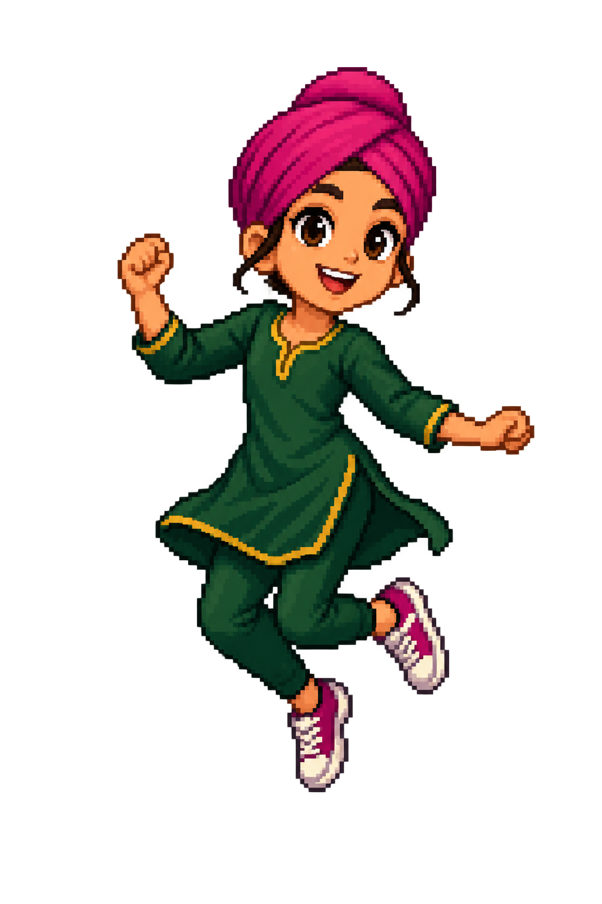
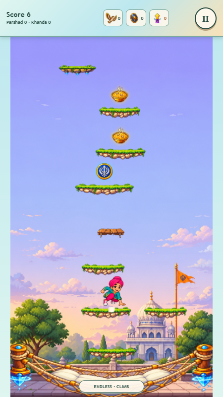

Kara boost
Concern: the energy aura and higher-jump effect present an article of faith as a magical item. The worn kara on the boy is a different, natural use that I would retain.
Option: replace this pickup with a spring or upward-arrow boost.
Creator decision, September 27: retain the allegorical kara/Nishan boosts, Khanda tokens, and fantasy premise. The recommendations below are preserved as review history, not approved changes or release requirements. No Guru imagery or personification is permitted. See SIKHI_TEXT_REVIEW.md for the current direction.
September 27, 2026 · Existing artwork, unchanged. These are editorial judgments about the image and its game role, not religious rulings. All decisions remain yours.
Concern: the energy aura and higher-jump effect present an article of faith as a magical item. The worn kara on the boy is a different, natural use that I would retain.
Option: replace this pickup with a spring or upward-arrow boost.
Concern: calling this Nishan while it grants flight and protection makes the Sikh flag function as a magic charm. Its blank cloth also communicates a generic fantasy flag more than an explanatory image.
Option: use a wind swirl or feather for flight; retain the upright flag beside the gurdwara.
Concern: the emblem is recognizable, but the player accumulates and spends it on upgrades. My objection is the currency role, not depicting the Khanda.
Option: keep the blue token style and use a star or flower instead.
Concern: the collectible reads as round sweets, while the glossary specifically names karah parshad. The icon's mound is visually different. The bird carrying a sacred offering and collecting it for points is also worth deciding deliberately.
Options: redraw a cohesive pudding-like mound if keeping the premise; or use ordinary food/supplies and a helping-the-community story. Redrawing alone does not resolve the score/retrieval concern.
Concern: these resemble the flag power-up and appear torn. There is no visible sacred emblem, so I do not regard this as a clear religious problem.
Option: a checkered race ribbon makes breaking through the finish unambiguous.

Finding: her headwrap and outfit change in the seated pose; a scarf appears. This is continuity, not grounds to judge her Sikh identity. I would make the poses match when polishing the art.
The boy and girl are presented positively; their head coverings remain on during falls.
The Sikh children, gurdwara-inspired scenery, upright background flag, plain shield, falcon, birds, floating platforms and safety net. The building is scenery, not a destructible obstacle. Sneakers in a fantasy sky scene do not by themselves depict footwear inside a worship space. I would not infer religious observance from small sprite details.
